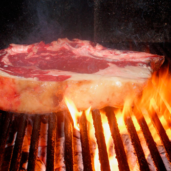
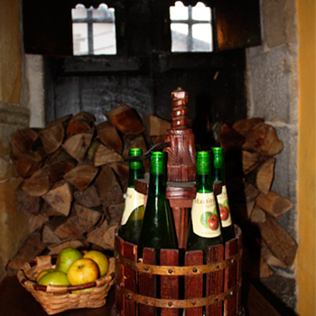

-
Bienvenidos al Txotx!!! La temporada se inicia el 18 de enero.
Os esperamos!!
La sidrería martitxonea tiene capacidad para 80-100 comensales quienes podrán disfrutar del ritual del txotx acompañado del menú típico de sidrería. -

Menú de sidrería Tortila de bacalao, chuletón,
membrillo y nueces y
degustación de las sidras.
La sidrería Martitxonea tiene capacidad para 80-100 comensales. Es un sitio ideal para reunirse con los amigos, familias, hacer comidas de empresa, despedidas de soltero… -

Venta de sidra Si quieres degustar nuestra sidra llama a 948 604 607.
A parte de la temporada del txotx se vende sidra en botella durante todo el año tanto a particulares como a bares como a almacenes. Tenemos cajas de 3 y 12 botellas.